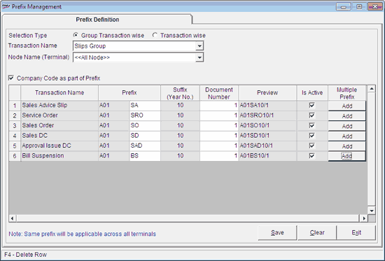

This option is used to define the document prefixes and the starting document number for all transactions.
How to reach: Setup > General > Transaction Prefix
The Prefix Management window is displayed.

Note: You are allowed to perform any Sales or Cash transactions in Shoper 9, only after defining the document prefixes of the corresponding transaction type. Example, if you try to open the billing window without defining the prefix, you will be alerted with an appropriate message.
Selection Type
Group Transaction wise: Select to define the document prefixes and the starting document number based on groups such as Cash Group, Delivery Group, Sales Group, Slip Group, Inward Group and Outward Group.
Transaction wise: Select to define the document prefixes and the starting document number based on transaction.
Transaction Name: Select the group or transaction (based on the Selection Type from the list).
Node Name (Terminal): Select required Node Name/ Terminal.
Company Code as part of Prefix: Select this option to use the company code as the first part of the prefix.
Prefix Definition Grid
Transaction Name: Displays the transaction names belonging to the selected group or transaction.
Note: In System Parameters select Allow Service Billing under the category Billing to enable Services Transactions.
Prefix: Type a meaningful prefix to suggest the transaction referred by it. If the option Company Code as part of Prefix is selected, then this column will be filled with the current company code.
Suffix (Year No.): The year number appears as suffix.
Document number: Enter the number from where the numbering for the concerned transactions begins.
Preview: Displays the bill number/ invoice number (combination of Prefixes, Suffix and Document number).
Is Active: Displays the status of the prefix. Uncheck to deactivate the prefix.
Multiple Prefix: To add different document prefixes and starting document number for the multiple transactions.